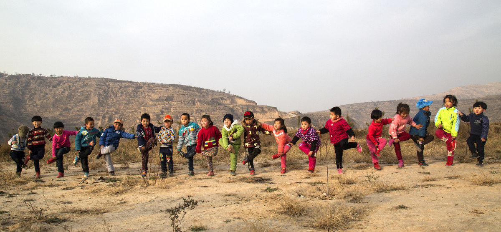
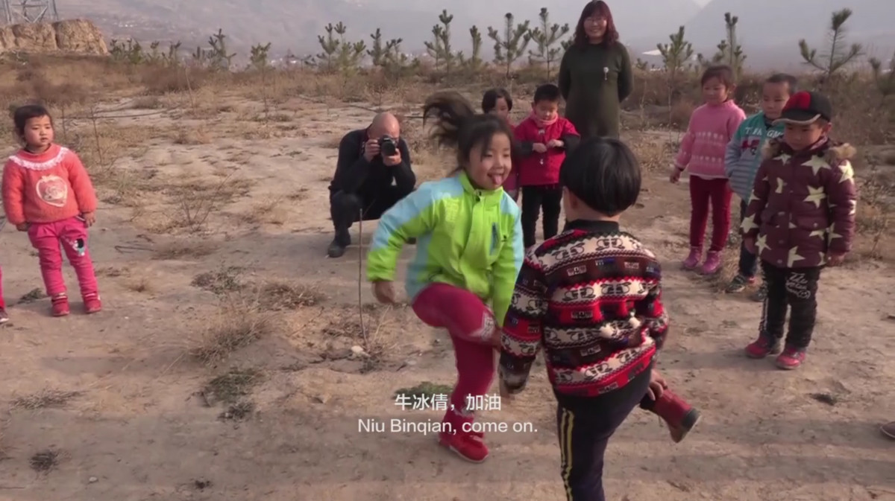
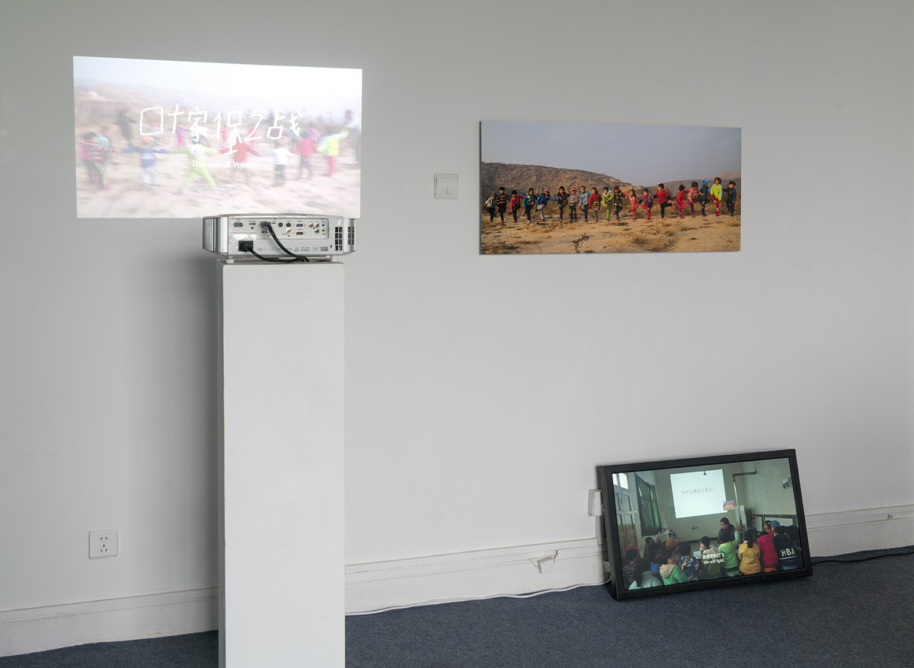
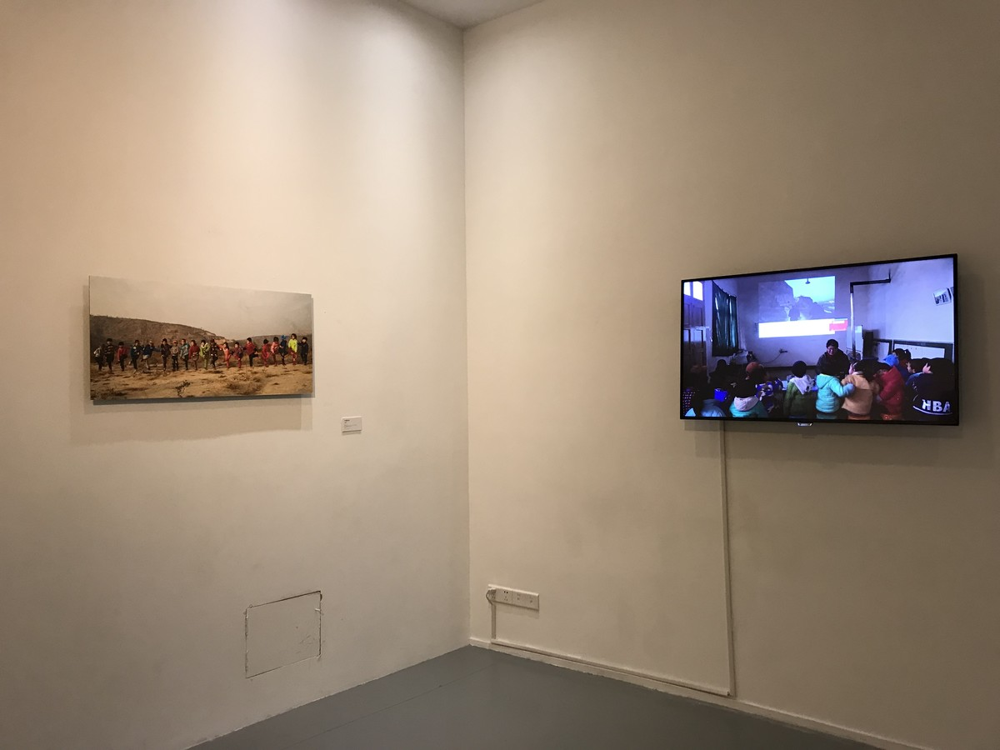

News & Contact
Projects
Cooperation projects
Texts
Biography
sHI Wanwan
Artist
News & Contact
Projects
Cooperation projects
Texts
Biography
叶家堡之战

图片，数字微喷到纯棉纸基，尺寸为100x46cm ；录像，5分54秒，单屏幕彩色，有声，可变尺寸 ，2016
2016年的冬天，在中国西北地区的甘肃省天水地区，我带领了19个小朋友在他们学校旁一个古代战争遗址（叶家堡）上玩了一场“打仗”游戏。
“堡子”是中国西北甘陕地区村民自卫用的城堡，多建于清末同治回乱时期。

甘肃天水叶家堡，天水

PPPP空间，北京

金鸡湖美术馆，苏州